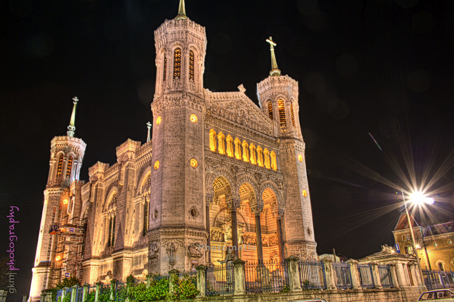

La région Auvergne-Rhônes-Alpes est composé de lieux majestueux ainsi que de monuments à voir absolument lors de votre
séjour.
La ville de Lyon
Basilique Notre-Dame de Fourvière
Si vous commencez par la ville de Lyon, vous devez absolument passer voir la Basilique Notre-Dame de Fourvière situé
au coeur de la ville. Construite sur un ancien forum romain au XIXème siècle, le lieu sacré est inscrit au patrimoine de
l’UNESCO et représente le pôle touristique majeur de la région.

Plus de 2 millions de visiteurs chaque année viennent visiter l’édifice où les lyonnais avaient pour coutume de prier
de protéger la ville des guerres, des épidémies et autres catastrophes. Pour les lyonnais comme pour les visiteurs, le lieu
représente l’âme même de la ville de Lyon ainsi que le coeur de la région Auvergne-Rhônes-Alpes.
Par ailleurs situé sur les hauteurs de Lyon (sur la colline de la Fourvière), on a de ce fait une vue imprenable sur la
ville.
La Basilique fait donc partie des monuments historiques de la ville à ne pas rater du fait de sa grandeur et de son style
néogothique qui lui est unique.
Le "Vieux Lyon"
Toujours dans la ville, le “Vieux Lyon” est l’un des quartiers historiques incontournables vu son style unique et
inégalable.
Le Vieux-Lyon, qui s’étend au pied de la colline de Fourvière sur 24 hectares, est l’un des plus vastes quartiers
Renaissance d’Europe. D’un côté, de nombreuses terrasses de cafés ou de restaurants offrent la possibilité aux visiteurs
de découvrir des spécialités, et de l’autre on a les fameuses traboules, ces couloirs d’immeubles qui représentent une
passerelle d’une rue à une autre en passant par les cours intérieures des immeubles. Vous pourrez ainsi observer le
patrimoine architectural d’une façon unique ! De ce fait, le quartier est d’ailleurs classé au patrimoine de l’UNESCO
depuis 1998.
N’attendez plus, allez à la rencontre de la population chaleureuse et allez déambuler dans les rues animées de la ville
où il y a toujours à découvrir !
Musée Miniature et Cinéma
Si vous êtes un mordu de cinéma (ou si vous aimez regarder des films tout simplement), un des lieux incontournables
pour vous reste le Musée Miniature et Cinéma situé dans la ville de Lyon, à deux pas de la Basilique de Fourvière.
Le point culminant de la visite reste bien entendu la partie miniature où sont exposés plus de 100 scènes très
réalistes et qui en feront retomber certains en enfance…
Le musée est d’ailleurs situé dans la célèbre "Maison des Avocats", bâtisse datant du XVIème siècle, classée elle aussi au
Patrimoine Mondial de l'UNESCO.
La ville d'Annecy
Le "Vieux Annecy"
Si vous êtes de passage à Annecy, il est indispensable de visiter la vieille ville, qu’on surnomme par ailleurs la
“Venise des Alpes”. La ville ayant été peuplé depuis plusieurs millénaires, celle-ci est caractérisée par de nombreux
canaux et édifices médiévaux, qui ne manqueront pas de vous émerveiller.
Les forteresses et les fortifications datant du Moyen-Âge vont vous offrir une vue imprenable sur l’ensemble de la ville.
Mis à part les panoramas époustouflants, la ville, riche en histoire, ne manquera pas de vous séduire.
La ville de Volvic
Château de Tournöel
Envie d’en apprendre davantage sur la région ? Rendez-vous au château de Tournoël. Le château de Tournoël est un
château fort médiéval bâti vers le Xème siècle, situé à presque 600 mètres d'altitude et domine la plaine de la Limagne.
Il est situé plus précisément à Volvic, commune du Puy-de-Dôme.
Le château appartenait à de riches familles d’Auvergne, le château fut le théâtre de nombreuses batailles qui ont
eu pour conséquence le siège de celui-ci en 1210. Le château a été par la suite détenu par la famille royale.
Aujourd’hui, vous pouvez désormais le visiter et apprendre son histoire.